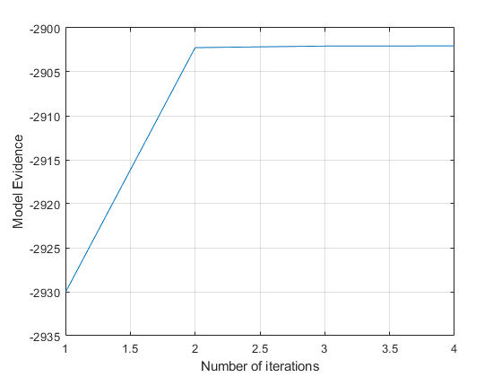

clear all
close all
N = 500;
X1 = randn(2,N);
X2 = randn(2,N);
options.maxIter = 512;
options.tol = 10^(-5);
cca = vbcca (X1,X2,1,1,options);
disp('Data source 1:');
disp('Estimated W');
disp([cca.W1{1}]);
disp('Estimated mean');
disp([cca.mu1{1}]);
disp('Data source 2:');
disp('Estimated W');
disp([cca.W2{1}]);
disp('Estimated mean');
disp([cca.mu2{1}]);
figure
plot(cca.Fhist);
ylabel('Model Evidence');
xlabel('Number of iterations');
grid on
options.null = 1;
cca_null = vbcca (X1,X2,1,1,options);
logBF_alt = cca.F - cca_null.F
Replicate 1, 1 iterations, total sum of distances = 1996.43.
Best total sum of distances = 1996.43
Iteration3, Lower bound:-2902.0721
Iteration4, Lower bound:-2902.0545
Relative change smaller than the tolerance after4 iterations.
Data source 1:
Estimated W
-0.2511
-0.1448
Estimated mean
-0.1215
-0.0077
Data source 2:
Estimated W
-0.1016
-0.2751
Estimated mean
-0.0080
-0.0012
Replicate 1, 1 iterations, total sum of distances = 1996.43.
Best total sum of distances = 1996.43
Iteration3, Lower bound:-2892.6394
Iteration4, Lower bound:-2892.6306
Relative change smaller than the tolerance after4 iterations.
logBF_alt =
-9.4239
